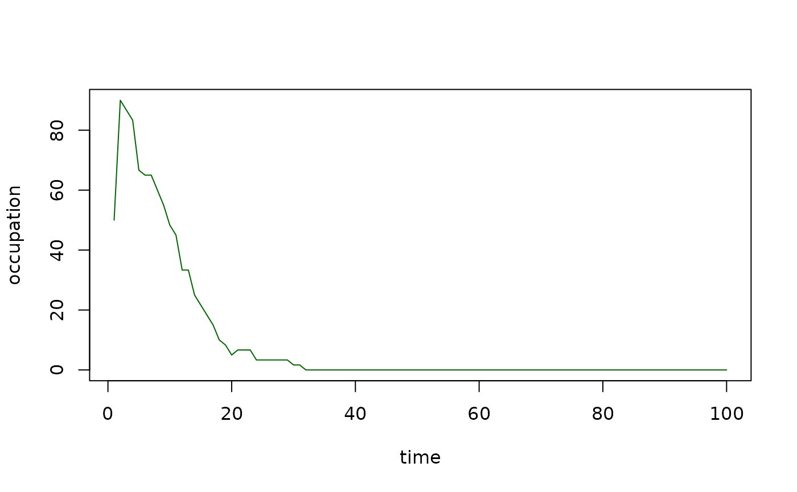

Returning information on a dynamic landscape list
list.stats.RdThis function allows the computation of some statistics of the sequence of landscapes obtained from simulate.graph. Namely: mean area of the patches, standard deviation of the area, mean pairwise Euclidean distance, total number of patches, species occupation and turnover and mean distance to nearest habitat patch. It allows the graphical representation of the evolution of these statistics.
Arguments
- sim_list
list from function
simulate_graph.- stat
'mean_area', 'sd_area', 'mean_distance', 'n_patches', 'occupation', 'turnover' and 'mean_nneigh'.
- plotG
TRUE/FALSE, plot output.
Value
Returns a vector with the evolution of the specified statistics throughout the list of landscapes representing the changes in a dynamic landscape and its occupation. A graphical output is also possible.It is possible to visualize the evolution of mean patch area, standard deviation of the patch area, mean distance between all pairs of patches, number of patches, species percentage of occupation, patch turnover (change in occupational state) and mean distance to nearest habitat patch.
Examples
data(rland)
data(landscape_change)
data(param1)
#First, using simulate graph, simulate the occupation on a dynamic landscape
#(output of span.graph):
sim1 <- simulate_graph( rl=rland, rlist=landscape_change, simulate.start=TRUE,
method="percentage", parm=50, nsew="none", succ = "none",
param_df=param1, kern="op1", conn="op1", colnz="op1",
ext="op1", beta1=NULL, b=1, c1=NULL, c2=NULL, z=NULL, R=NULL)
#Then evaluate species occupancy through the changes suffered by the landscape:
occ <- list.stats(sim_list=sim1, stat="occupation", plotG=TRUE)

#Checking the percentage of occupation in the 40 first landscapes:
head(occ,40)
#> [1] 50.000000 90.000000 86.666667 83.333333 66.666667 65.000000 65.000000
#> [8] 60.000000 55.000000 48.333333 45.000000 33.333333 33.333333 25.000000
#> [15] 21.666667 18.333333 15.000000 10.000000 8.333333 5.000000 6.666667
#> [22] 6.666667 6.666667 3.333333 3.333333 3.333333 3.333333 3.333333
#> [29] 3.333333 1.666667 1.666667 0.000000 0.000000 0.000000 0.000000
#> [36] 0.000000 0.000000 0.000000 0.000000 0.000000
#Output:
#[1] 50.000000 65.000000 90.000000 96.666667 93.333333 91.666667
#[7] 91.666667 90.000000 93.333333 90.000000 85.000000 83.333333
#[13] 85.000000 88.333333 83.333333 86.666667 81.666667 68.333333
#[19] 70.000000 75.000000 80.000000 73.333333 63.333333 56.666667
#[25] 55.000000 51.666667 46.666667 41.666667 38.333333 21.666667
#[31] 13.333333 13.333333 10.000000 6.666667 5.000000 3.389831
#[37] 1.694915 1.694915 0.000000 0.000000